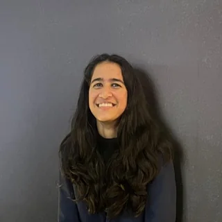
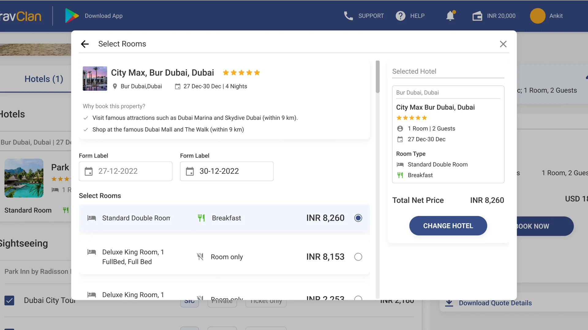
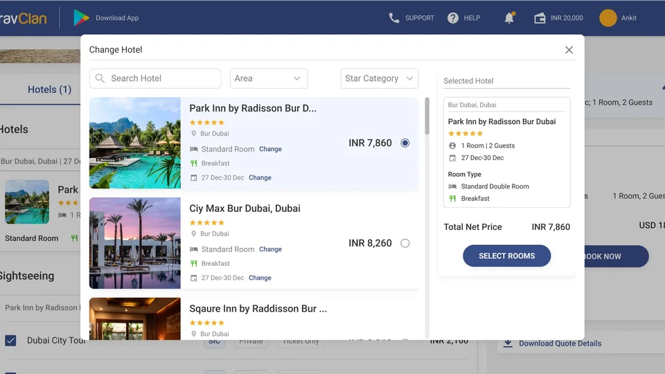
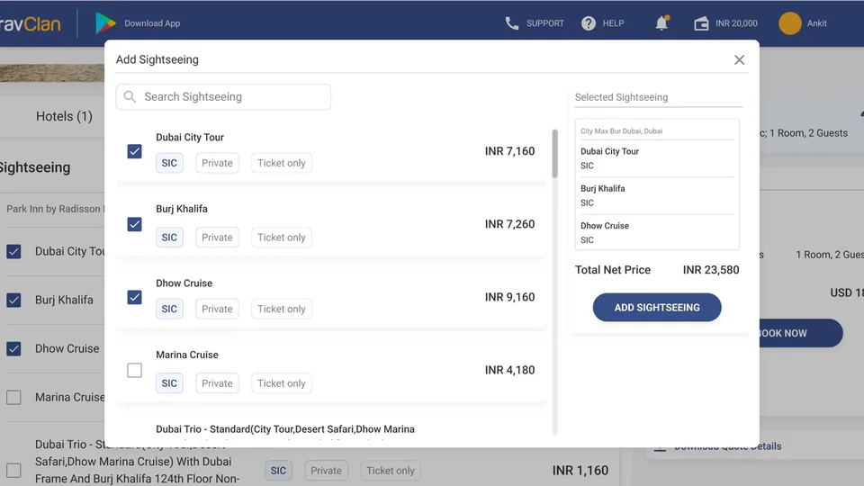
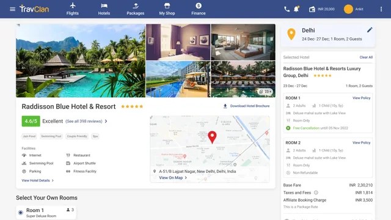

More doing.
TRAVCLAN · ARYABHATA
Streamlining work for internal operations teams
Organized high-context internal workflows so teams could locate information, resolve requests and move work forward with fewer hand-offs.

Hello, I’m Ananya Sharma. I turn operational complexity into usable, scalable products through research, systems thinking and close collaboration with product and engineering teams.
Enterprise platforms, operational tools and travel products designed from ambiguity to build-ready systems.


ZS · ENTERPRISE PRODUCT
Designed one connected system for schedules, allocation, proficiency, leave and approvals—without giving every role the same interface.
ZS · INTERNAL TOOLS · ONGOING
Building an evidence-based roadmap across two connected tools—from platform immersion and user interviews to cross-functional alignment and UAT.




TRAVCLAN · HOLIDAYS
Owned the UI/UX design from research to build-ready UI, helping agents configure hotels, sightseeing, transfers and itineraries in context.

View ↗TRAVCLAN · HOTELS
Redesigned the B2B booking path around the information agents need at each decision—from property evaluation to room selection.
TRAVCLAN · ARYABHATA
Organized high-context internal workflows so teams could locate information, resolve requests and move work forward with fewer hand-offs.
More selected explorations
What I bring
I connect user needs, business context and technical reality—then turn that understanding into focused experiences teams can confidently build.
User interviews, stakeholder workshops, journey mapping, competitive audits and problem framing.
Information architecture, workflows, wireframes, interaction patterns and high-fidelity prototyping.
Design systems, component logic, accessibility, responsive behavior, developer handoff and design QA.
Usability testing, analytics, feedback loops, hypothesis testing and continuous iteration.
How I work
I frame the problem with users and stakeholders, test competing directions, align with technical constraints and stay involved through handoff and design QA.
Experience
UI/UX Designer
Designing role-aware workforce workflows and leading a research-led revamp of internal project creation and resource allocation tools.
EnterpriseUI/UX Designer
Owned UI/UX design across holidays, flights, hotels, on-trip and internal tools for a B2B travel platform.
Travel techUI/UX Designer
Designed responsive web and Android experiences across client projects, from discovery through handoff.
AgencyUI/UX Design Intern
Designed responsive website and application experiences with a user-first approach.
InternshipEducation
B.Tech, Computer ScienceGraphics & Gaming · UPES · 2018–2022